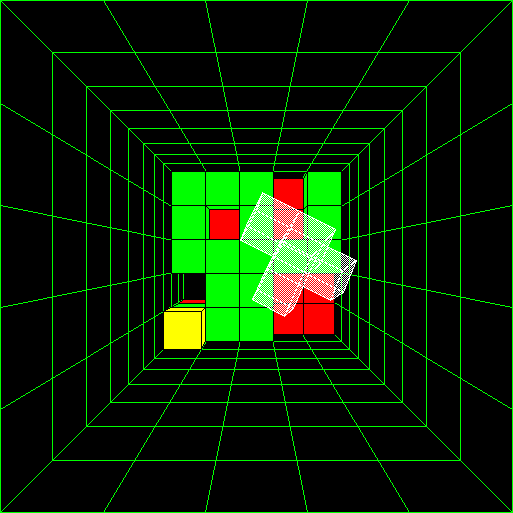
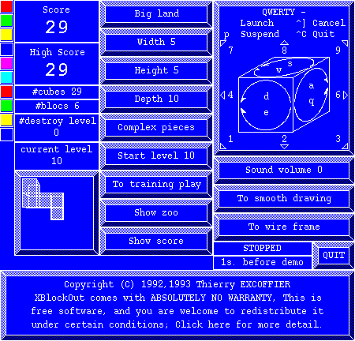
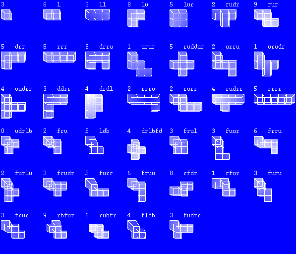
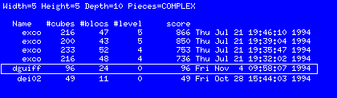

XBlockOut (xbl 1.1.6)
X Window block dropping game in 3 Dimension
You need UNIX and X11 to run this game
The grand father of this game is TETRIS,
its father is
BLOCKOUT on PC/DOS.
Blockout is a registered trademark of Kadon Enterprises, Inc., used by permission.
The player must place 3D pieces by translations and rotations
in order to fill the game floor.
The game is realtime and the speed increases with
the player skill.
You can see the
complete manual
of the xbl command.
If you can't resist you can retrieve
the game
(xbl-1.1.6.tar.gz).
The XBL author is
Thierry EXCOFFIER (a
LIRIS
researcher).
What's XBL doesn't have yet:
- Obstacles, goals, ...
- Multi-player game.
- Really fun sounds.
Every one can contribute to this game.
And now, some slides of the game!!!
The game window
It is in this window that pieces fall on the floor.
The window title contains current score and high score.

The menu window
It is in this window that the user customize the game
he will play or is playing.

The zoo window
It is in this window that the user
saw the horrible piece that could fall.
The statistics on the current game are displayed.

The score window
It is in this window that the user
see the score table for the choosen game.
There is a score table for:
- Each game size.
- Each set of possible piece.
The framed score is the last one made.
